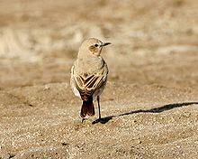
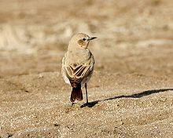

| Isabelline Wheatear | |
|---|---|
|  | |
| Showing black tail | |
| Conservation status | |
| Binomial name | |
| Oenanthe isabellina (Temminck, 1829) |
| Isabelline Wheatear | |
|---|---|
|  | |
| Showing black tail | |
| Conservation status | |
| Binomial name | |
| Oenanthe isabellina (Temminck, 1829) |
The Isabelline Wheatear, Oenanthe isabellina, is a small passerine bird that was formerly classed as a member of the Thrush family Turdidae, but is now more generally considered to be an Old World flycatcher, Muscicapidae.
It is a migratory insectivorous bird. It breeds in southern Russia and central Asia to Northern Pakistan, wintering in Africa and India.
It is like a female Northern Wheatear but it is larger at 15–16.5 centimetres (5.9–6.5 in) in length, more upright and more tawny in colour, and has more black on its tail. The term isabelline refers to the colouration. The axillaries and underwing coverts are white, whereas in the commoner bird they are mottled with grey. Sexes are similar.
It is a very rare vagrant to western Europe.

_male,_non-breeding.jpg){kind=link}